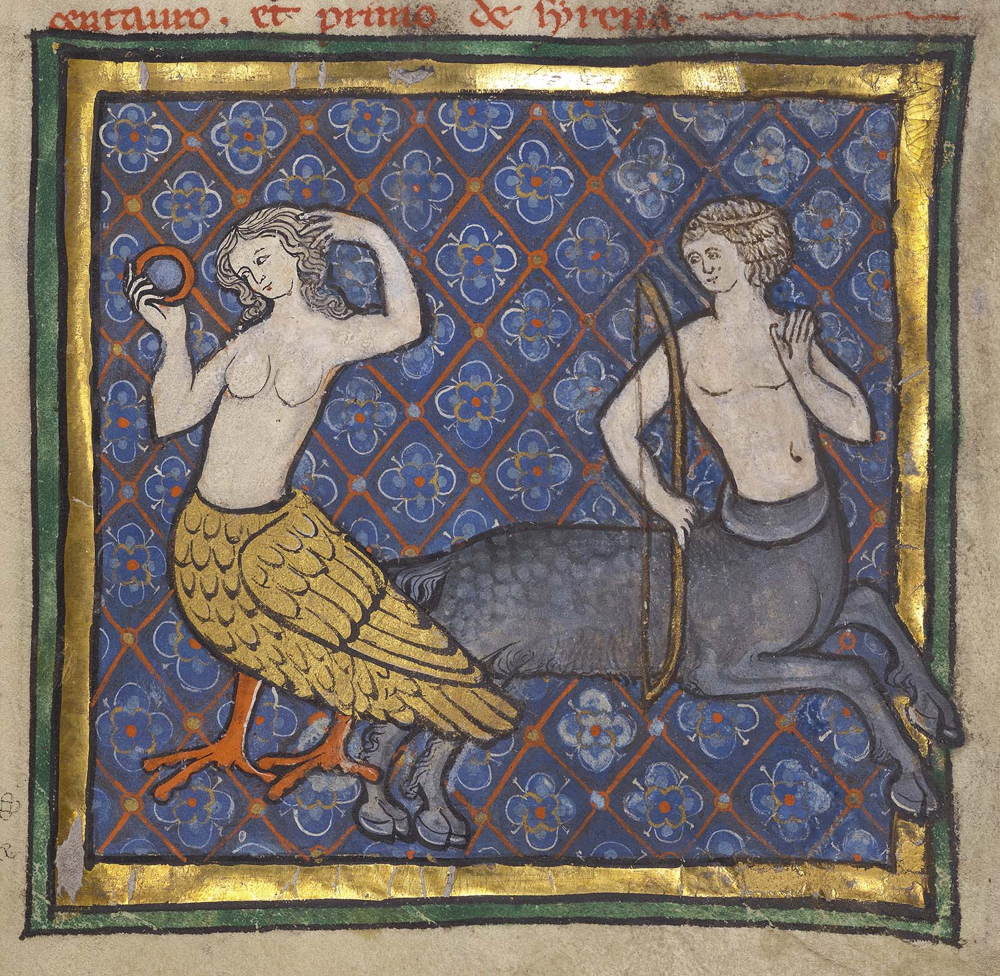

Digital philology:
new methodologies (new issues)
Helena Bermúdez Sabel (Université de Neuchâtel)
Outline
- Digital Philology as a “new” discipline
- Changing the paradigm: from auxiliary tools to new hermeneutics
Digital Philology
Definition
- Use of computational methods to carry out
philological research
- Thus a printed edition whose development depended on this type of methods (e.g. computer-assisted collation) could be a Digital Philology output
Setting up boundaries
- Computational vs. digital (cf. Hockey 2011: 84)
- Should a discipline be defined by its methods? (cf. Tomasin 2018)
In any case...
Computational methods are applied to pursue philological research questions and this requires interdisciplinary approaches
Issue 1: setting up interdisciplinary teams
- Need of additional human resources
- Loss of autonomy of the philologist
- Difficulties at managing an interdisciplinary team ...when we understand very little of the other discipline
In search of a unicorn
Programmer/Humanist Hybrid
Detail of a siren and a centaur, f. 78 of Ms. Ludwig XV 3. J. Paul Getty Museum
Why unicorns are still rare
Breeding and ecosystem preservation issues
Change of paradigm
(...) at the time of our writing according to TextMate (...) this text up to here has 1,167 words, and according to MS Word it has 1,174. If something as deceptively simple as counting the number of words in documents gives different results in different pieces of software, how do we trust complicated topic modeling software like Mallet that produces hundreds of clusters of terms as suggested topics found in a corpus? (van Zundert & Dekker 2017: i123)
Issue 2: the importance of computer literacy
- Can I use software in my research if I don’t understand exactly how it works?
- Can I trust the results provided by a piece of software if I don’t understand its functioning?
Coding as a scholarlyphilolological
work
Code criticism: examination and critical interrogation of what the code does and its scholarly or scientific intentions (van Zundert & Dekker 2017)
Technology beyond an auxiliary tool
corpus-driven research
computational stemmatology
computer-assisted collation
digital-born ecdotic models
Digital Scholarly Editing:
New ecdotic models
L’ œuvre [médiévale] est pensée une, mais exprimée plurielle
(Roudil 1986: 95), Summa de los nueve tiempos de los pleitos
Synoptic-experimental editions in the digital ecosystem
- “(...) la mera superposición de las variantes no puede suplir un aparato crítico” (Sánchez-Prieto Borja 1998: 35)
- Possibility to offer information that enables the contextualization of textual variants: the interface as part of the philological discourse (Andrews & van Zundert 2018)
Selection of criteria of the edited text (Bermúdez Sabel 2019)
Synoptic edition (Bermúdez Sabel 2019)
Synoptic edition (tabular) (Bermúdez Sabel 2019)
Synoptic edition (Bermúdez Sabel 2019)
Presentation of results after selecting a variation phenomenon (Bermúdez Sabel 2019)
Some advantages of digital editions
- UNICODE and specific initiatives like the Medieval Unicode Font Initiative (MUFI) enable the encoding of a large set of abbreviations and allographs + creation of fonts
- Combination of different editorial criteria simultaneously
- “Replacement” of the traditional critical apparatus
- Quantitative exploitation of the text (and the analytical information added)
- Economic factors
New challenges
- Conceptualization of the workflow
- Infrastructure and human resources
- Usability
- Long-term sustainability
New methodological perspective
Where to stop? (Pierazzo 2011: 466)

Édition hyperDIplomatique de la lyrique GAlégo-portugaise (DIGA) (Bermúdez Sabel 2022)
References
- Andrews, T. (2016): “Freeing Our Texts from the (Digital Tool)Chains”. TEI Conference and Members' Meeting 2016. Keynote. [Video]
- Andrews, T. & J. van Zundert (2018): “What Are You Trying to Say? The Interface as an Integral Element of Argument”, in R. Bleier et al. (eds.), Digital Scholarly Editions as Interfaces. Norderstedt: BoD, 3–33.
- Bermúdez Sabel, H. (2019): As humanidades digitais e a sua aplicação à variação linguística na lírica galego-portuguesa. PhD Thesis. Universidade de Santiago de Compostela.
- Bermúdez Sabel, H. (2022): “L’édition numérique au service de la philologie matérielle. Modèles de la lyrique galégo-portugaise”, in D. González (ed.),Verdades duplas. A verdade do texto e a verdade material. Cancioneiros e fragmentos galego-portugueses. Argamed 5/2022. Santiago de Compostela: CRPIH, 11–30.
- Hockey, S. (2011): “Digital Humanities in the Age of the Internet: Reaching Out to Other Communities”, in M. Deegan e W. McCarty (eds.), Collaborative research in the digital humanities, Ashgate, Farnham, 81–92.
- Pierazzo, E. (2011): “A Rationale of Digital Documentary Editions”. Literary and Linguistic Computing 26 (4): 463–77. doi:10.1093/llc/fqr033.
- Roudil, J. (1986): Summa de los nueve tiempos de los pleitos. Édition et étude d’une variation sur un thème par Jean Roudil, Paris, Klincksieck.
- Sánchez-Prieto Borja, P. (1998): Cómo editar los textos medievales. Criterios para su presentación gráfica, Madrid, Arco Libros.
- Tomasin, L. (2018): “Why digital philology does not exist. Nine and a half theses for philology in the era of digital liquidity”, in Proceedings of the Conference: «Textual Philology facing Liquid Modernity» (Rome, Spring 2018). Forthcoming.
- van Zundert, J. & R. Dekker (2017): “Code, scholarship, and criticism: When is code scholarship and when is it not?”. Digital Scholarship in the Humanities 32 (Supplement 1): i121–i133, doi:10.1093/llc/fqx006
Thank you!
Slides: https://helenasabel.github.io/presentations/IRCVM.html